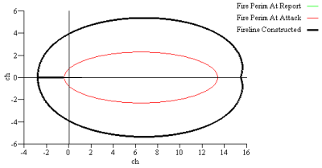
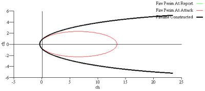

|
|
Suppression Tactic |
There are two possible suppression tactics:
Because the attack proceeds along both flanks, the resource line construction rate along each flank is half of the specified rate for the resource. Head attack is more risky than rear attack, but results in smaller fires and quicker containment.
|
I/O |
Module |
If |
Notes |
|
Input |
CONTAIN |
|
Head or Rear |
|
Output |
None |
|
|
Head attack begins at the head of the fire, at the specified distance from the fire front (line construction offset), and proceeds along both flanks toward the rear. In this example, the offset is 2 chains (parallel attack).
|  |
|  |